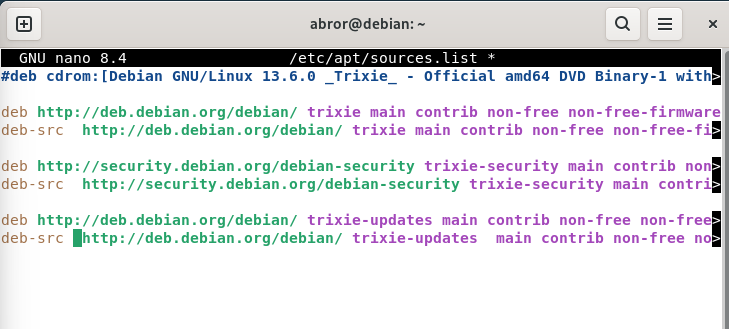
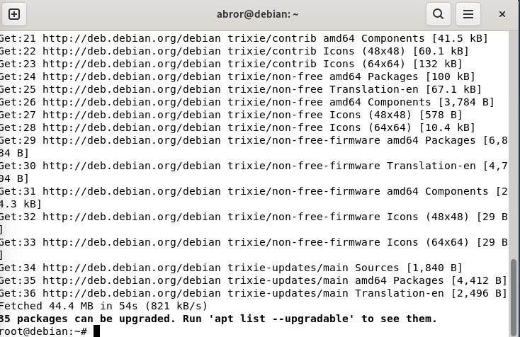

Update Repository Debian
Jobsheet ini menjelaskan cara memperbarui daftar repository (sources.list) dan melakukan upgrade sistem pada Debian. Pastikan langkah-langkah berikut dilakukan secara berurutan.
1. Pastikan Koneksi Internet Sudah Terhubung
Sebelum mengatur repository, pastikan komputer sudah terkoneksi ke internet dengan melakukan ping ke IP luar:
#ping 8.8.8.8

2. Atur Alamat Repository Debian
Buka file sources.list untuk menentukan alamat server tempat Debian akan mengunduh paket:
#nano /etc/apt/sources.list
Isi atau sesuaikan file tersebut dengan alamat repository resmi Debian 13 seperti berikut: Untuk baris paling atas itu bawaan bisa dihapus atau tambahkan # diawal agar tidak berfungsi alamatnya
deb http://deb.debian.org/debian/ trixie main contrib non-free non-free-firmware
deb-src http://deb.debian.org/debian/ trixie main contrib non-free non-free-firmware
deb http://security.debian.org/debian-security trixie-security main contrib non-free non-free-firmware
deb-src http://security.debian.org/debian-security trixie-security main contrib non-free non-free-firmware
deb http://deb.debian.org/debian/ trixie-updates main contrib non-free non-free-firmware
deb-src http://deb.debian.org/debian/ trixie-updates main contrib non-free non-free-firmware

Setelah selesai diketik, simpan dengan menekan Ctrl+O lalu Enter, kemudian keluar dengan Ctrl+X.
3. Update dan Upgrade Sistem
Jalankan perintah berikut untuk memperbarui daftar paket, lalu meng-upgrade seluruh paket yang sudah terpasang ke versi terbaru:
#apt update
#apt upgrade
Tunggu proses selesai. Sistem akan menampilkan daftar paket yang diunduh dan jumlah paket yang bisa di-upgrade. Ketik Y jika muncul konfirmasi untuk melanjutkan.

Pastikan proses update dan upgrade berjalan hingga selesai tanpa error, agar sistem Debian benar-benar terbarui.